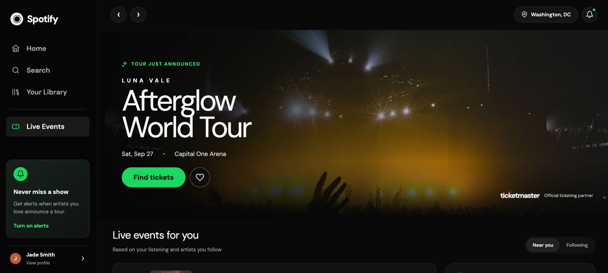
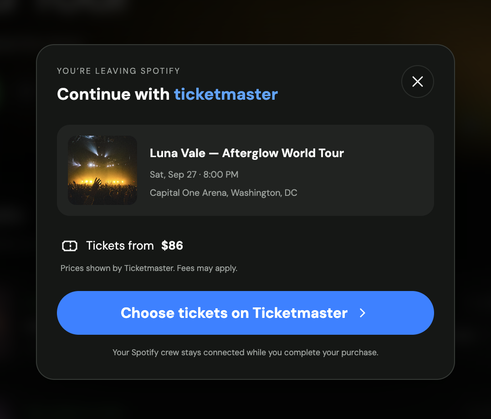
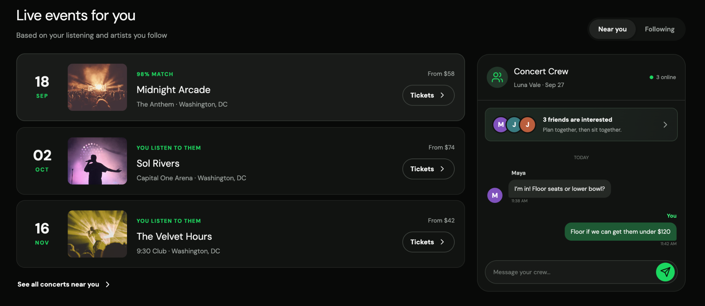

02 · Product Concept
Spotify ×
Ticketmaster
A rapid product concept exploring how music discovery, concert planning, and ticketing could feel more connected.
Independent concept project. Not affiliated with Spotify or Ticketmaster.
- ROLE
- Product Designer
- FORMAT
- Independent concept
- FOCUS
- Interaction + product flow
- PROTOTYPE
- Figma Make


The gap between listening and going
Music discovery can happen naturally inside Spotify, but acting on the desire to see an artist live often means leaving that context behind and starting over somewhere else.
I wanted to explore a tighter journey: surface concerts that already feel relevant, help people understand why an event matches their listening, give friends a place to coordinate, and make the eventual ticketing handoff feel intentional rather than abrupt.
Rapid prototyping on purpose
This project intentionally used a different process from Scoops. Rather than starting with a full wireframe set, I used Figma Make to move quickly from a product hypothesis into an interactive interface that I could judge in context.
The speed was useful, but the design decisions still came from me: deciding what belonged in the Spotify experience, how much Ticketmaster information to expose before the handoff, where social planning should live, and how closely the concept should follow familiar Spotify interaction patterns.
Three connected moments
The final concept is less about adding “concerts” to Spotify and more about connecting the decisions a listener already makes before going to a show.

Concert recommendations use signals such as listening behavior and location, while Concert Crew gives interested friends a lightweight place to coordinate around a specific show.
The event page stays within the visual language of the listening product, making the move from artist interest to a live event feel like a continuation rather than a separate task.
Before sending the user to Ticketmaster, the concept confirms the event, starting price, and what will happen next. The handoff is explicit without pretending the purchase happens inside Spotify.
Designed to be experienced
The screenshots capture the final visual states, but the project was built as an interactive Figma Make prototype so I could evaluate the transitions between them rather than treating each screen as an isolated mockup.
The flow matters as much as the screens.
A public prototype link or short walkthrough can be added here when ready.
What I learned
AI made the route from idea to interactive prototype much shorter. It did not remove the need for product judgment.
The most useful part of the workflow was being able to test the shape of an idea quickly. The less useful part was treating generated output as inherently finished. I still had to decide what the product should prioritize, where the experience became too busy, how the Spotify and Ticketmaster roles should remain distinct, and which interactions actually supported the concept.
If I continued the project, I would validate whether listeners understand the Concert Crew feature without explanation, whether personalized event signals feel useful rather than invasive, and whether the Ticketmaster handoff gives users enough information before they leave Spotify.